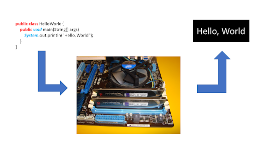
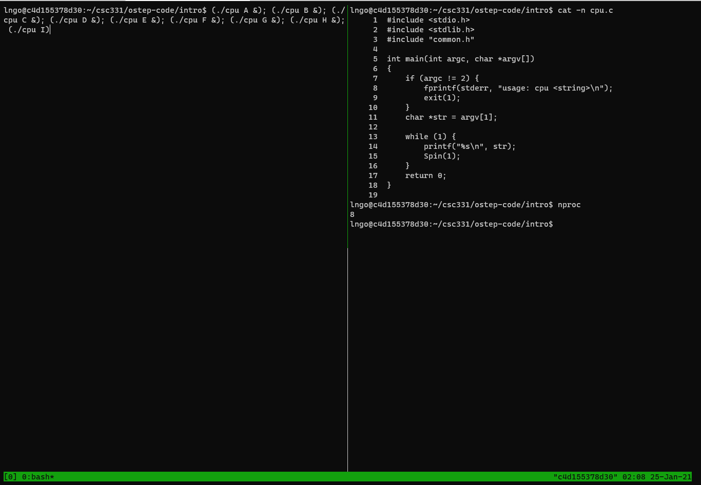
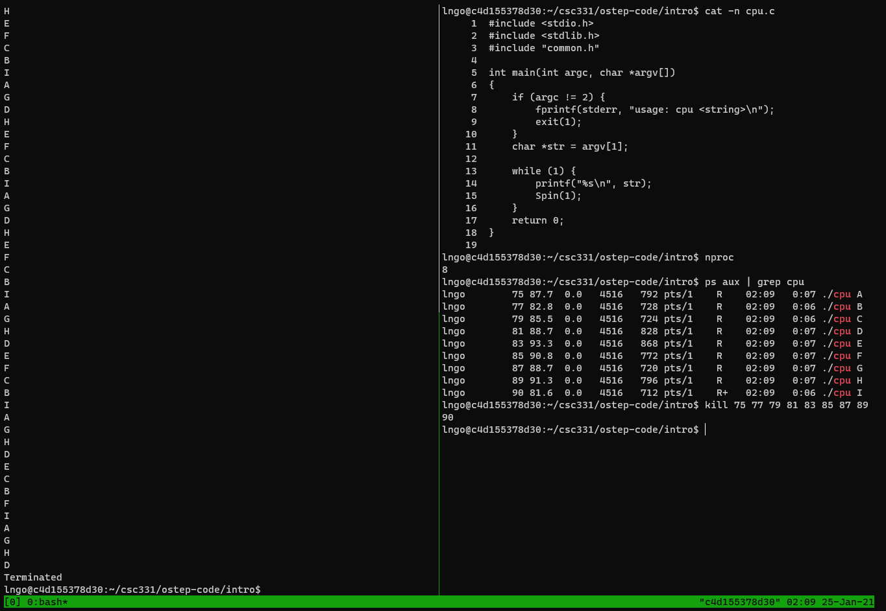
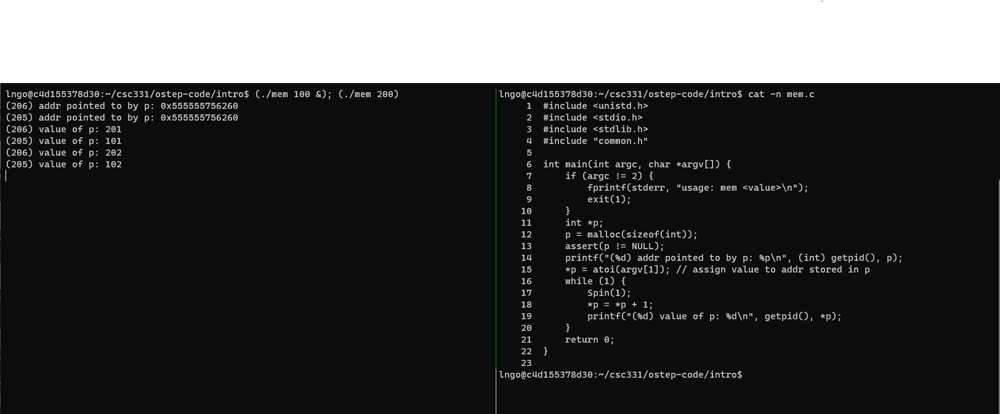
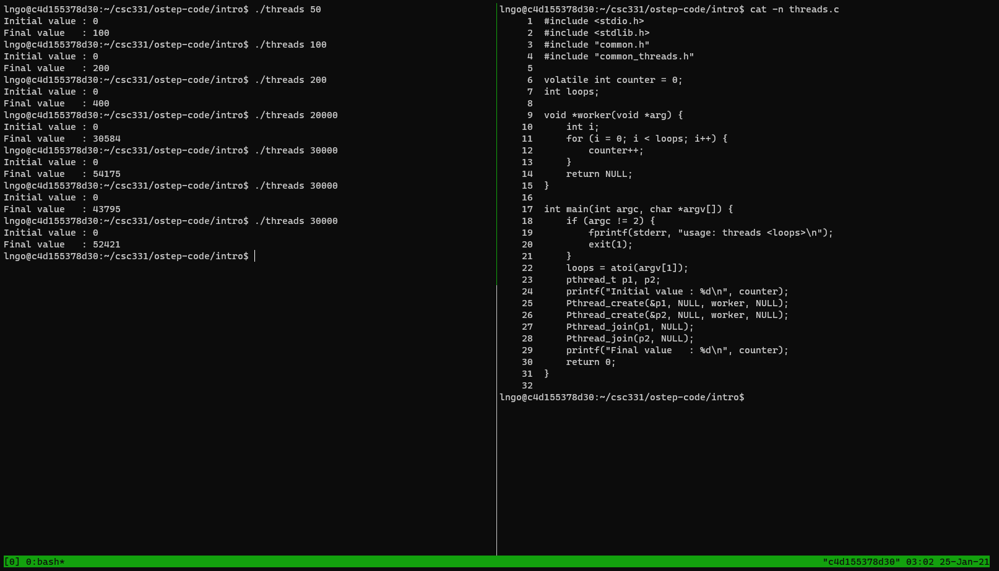

Introduction to Operating Systems
Contents
Introduction to Operating Systems#
1. What happens when a computer program run?#
The process
fetches an instruction from memory,
decodes the instruction, and
executes the instruction. This is the fundamental Von Neumann model of computing.
2. Why do we need OS?#

What a programmer see is all code, lines of codes.
Underneath, there is a complex ecosystem of hardware components.
How do we hide this complexity away from the programmers?
3. How do the OS help (1)?#
This is possible due to virtualization.
Virtualization: presents general, powerful, and easy-to-use virtual forms of physical computing resources to users (programmers).
The linkage between virtual interfaces and physical components are enabled through the OS’ system calls (or standard library).
4. How do the OS help (2)?#
Each physical component in a computing system is considered a resource.
The OS manages these resources so that multiple programs can access these resources (through the corresponding virtual interface) at the same time.
This is called concurrency.
5. Hands-on: Getting started#
If you are on a virtual machine (VirtualBox/VMWare/Hypervisor/WSL), launch a terminal
If you are on Docker Dekstop, launch a container using the following command:
Password of the account is
goldenrams
docker run --rm --userns=host --cap-add=SYS_PTRACE --security-opt seccomp=unconfined -it linhbngo/csc-container /bin/bash
Create a directory called csc331 and
Navigate to
/home/$USER/csc331Clone the scripts Dr. Arpaci-Dusseau’s Git repo.
Change to directory
ostep-code/intro, then runmaketo build the programs.
cd
mkdir csc331
cd csc331
git clone https://github.com/remzi-arpacidusseau/ostep-code.git
cd ostep-code/intro
make
6. Hands-on: CPU Virtualization#
Our workspace is limited within the scope of a single terminal (a single shell) to interact with the operating system.
tmux: terminal multiplexer.tmuxallows user to open multiple terminals and organize split-views (panes) within these terminals within a single original terminal.We can run/keep track off multiple programs within a single terminal.
cd ~/csc331/ostep-code/intro
tmux
Splits the
tmuxterminal into vertical panes: first press the keysCtrl-bthen lift your fingers and press the keysShift-5(technical documents > often write this asCtrl-band%).You can use
Ctrl-bthen theleftandrightarrows to move the active cursors between the two panes.Move the cursor to the right channel and run the following commands to view the source code of
cpu.c.Also run
nprocin the right pane to figure out how many CPUs your container has access to.
cat -n cpu.c
nproc
Run the following command on the left pane to execute
cpuprogram accordingly.Reminder: use
Ctrl-bthen theleftandrightarrows to move the active cursors between the two panes.
In my case, I have 8 cores, so my commands will be extended for two more.
(./cpu A &); (./cpu B &); (./cpu C &); (./cpu D &); (./cpu E &); (./cpu F &); (./cpu G &); (./cpu H &); (./cpu I)

To stop the running processes on the left pane, move to the right pane and running the following commands:
ps aux | grep cpu
Identify the process ID (the second columns), then use the
killto kill all the process IDs (see figure below).

7. The illusion of infinite CPU resources#
A limited number of physical CPUs can still be represented as infnite number of CPUs through virtualization.
The OS will manage the scheduling and allocation of the actual run on physical resources.
{: .callout}
8. Hands-on: Memory Virtualization#
Type
exitand hitEnteronce to close one pane.Type
exitand hitEnteragain to close tmux.Run the following commands:
setarch `uname -m` -R /bin/bash
tmux
Press
Ctrl-band thenShift-%to split the tmux screen into two vertical panes again.In the right pane, run the following command:
cat -n mem.c
In the left pane, run the following command:
(./mem 100 &); (./mem 200)
When finished, kill the two memory processes using the
killcommand and the process ID shown in the parentheses. You should switch to the right pane for this task.

Do programs running concurrently occupy the same memory locations (addresses)?
10. The illusion of dedicated memory resources#
Many running program share the physical memory space.
Each runnning program is presented with the illusion that they have access to their own private memory. This is called virtual address space, which is mapped to physical memory space by the OS.
Making memory references within one running program (within one’s own virtual address space) does not affect the private virtual address space of others.
Without the
setarchcommand, the location of variablepwill be randomize within the virtual address space of a process. This is a security mechanism to prevent others from guessing and applying direct manipulation techniques to the physical memory location that acually containsp.
11. Concurrency#
As shown in CPU Virtualization and Memory Virtualization examples, the OS wants to manage many running programs at the same time.
This is called concurrency, and it leads to a number of interesting challenges in designing and implementing various management mechanisms within the OS.
12. Hands-on: Concurrency#
Run
clearcommand on both panes to clear the screen.On the right pane, run the followings:
cat -n threads.c
On the left pane, run the following commands several times:
./threads 50
./threads 100
./threads 200
threads.ccreates two functions running at the same time, within the same memory space of the main program.A single global variable named counter is being increased by both functions, thus the final value of counter should be twice that of the command line argument.
Now run with bigger values.
./threads 20000
./threads 30000
./threads 30000
./threads 30000

13. Observation#
Naive concurrency gives you wrong results.
Naive concurrency gives you wrong and inconsistent results.
14. Why does this happen?#
At machine level, incrementing counter involves three steps:
Load value of counter from memory into register,
Increment this value in the register, and
Write the value of counter back to memory.
What should have happened:
One thread increments counter (all three steps), then the other thread increments counter, now with the updated value.
What really happened:
One thread increments counter.
While this thread has not done with all three steps, the other thread steps in and attempts to increment the stale content of counter in memory.
15. Persistency#
When the programs stop, everything in memory goes away: counter, p, str.
Physical components to store information persistently are needed.
Input/output or I/O devices:
Hard drives
Solid-state drives
Software managing these storage devices is called the file system.
Examples of system calls/standard libraries supporting the file system:
open()write()close()
16. A brief history of operating system research and development#
A good paper to read: Hanser, Per Brinch. “The evolution of operating systems” 2001
17. Early operating systems: just libraries#
Include only library for commonly used functions.
One program runs at a time.
Manual loading of programs by human operator.
18. Beyond libraries: protection#
System calls
Hardware privilege level
User mode/kernel mode
trap: the initiation of a system call to raise privilege from user mode to kernel mode.
19. The era of multiprogramming#
Minicomputer
multiprogramming: multiple programs being run with the OS switching among them.
Memory protection
Concurrency
20. The modern era#
Personal computer
DOS: the Disk Operating System
Mac OS
Multics (MIT) -> UNIX (Bell Labs) -> BSD (Berkeley) -> Sun OS/Linux